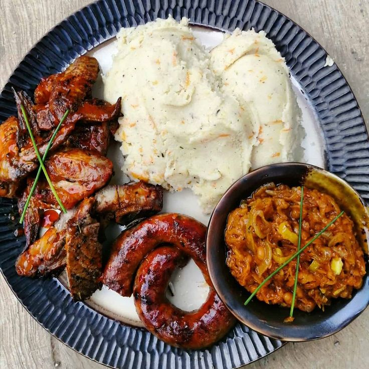
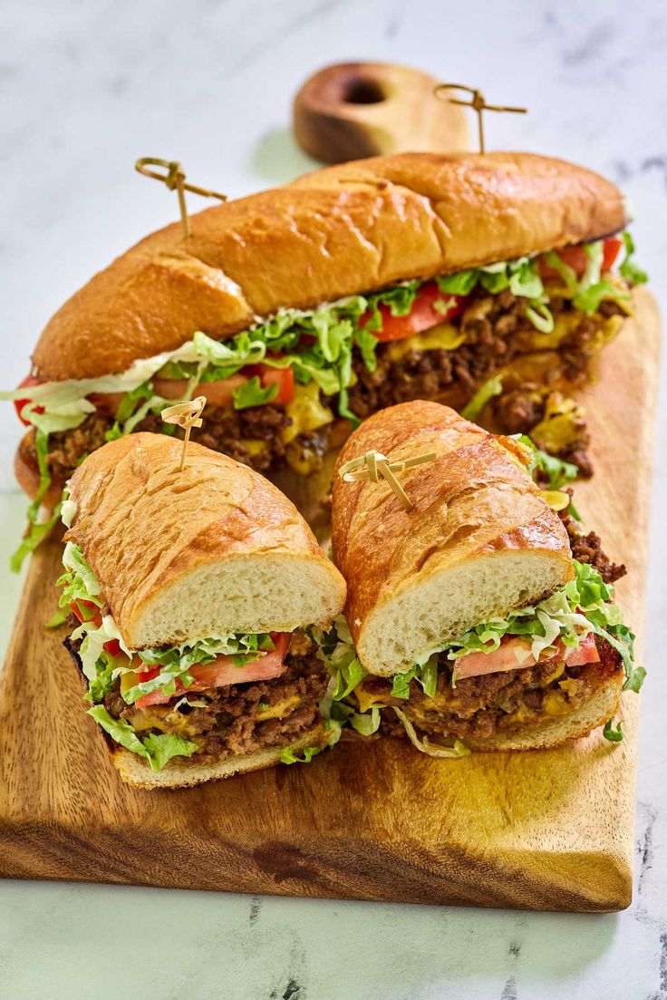
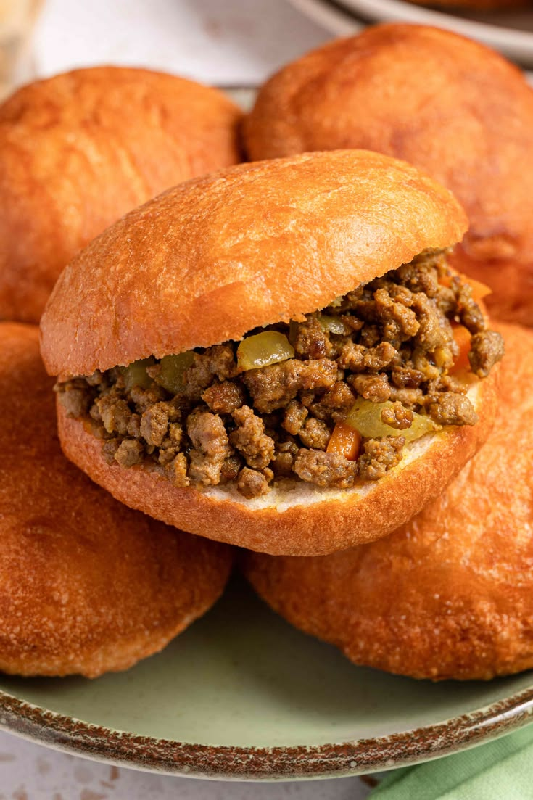

Elevating The Art Of Fine Fast Dining
Obsidian Express serves full-flavour plates, fired fast and plated precisely to a science — built for people who move quickly but still expect a proper meal.
Explore Our Menu Search the MenuOur Menu
We offer a variety of dishes designed to be both quick and delicious. From classic South African comfort foods to innovative culinary creations, our menu has something for everyone.
Gallery
A taste of what is coming out of our Braamfontein kitchen. Click any photo to view it larger.






Why Choose Obsidian Express?
Looking for South African fast food in Braamfontein, Johannesburg? Obsidian Express blends street-food favourites like kota, gatsby and amagwinya with proper plate kos and braai classics, all made with locally sourced ingredients. Read our story, browse the full menu or get a catering quote.